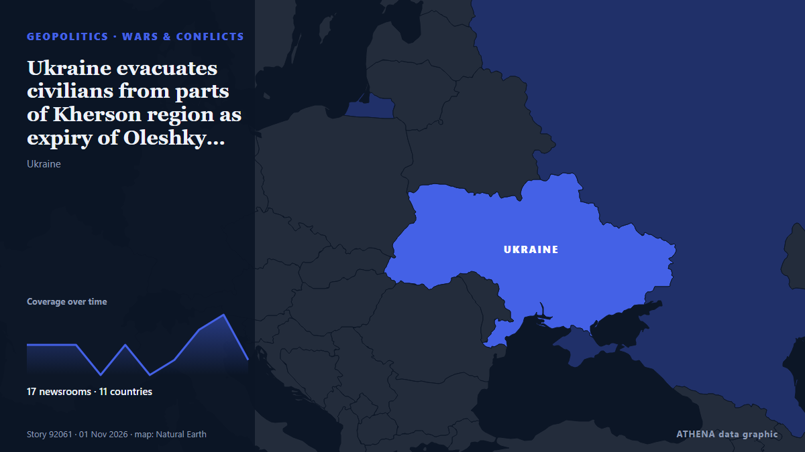

الحروب والنزاعات
| 19 أكتوبر | 1 |
|---|---|
| 20 أكتوبر | 1 |
| 21 أكتوبر | 0 |
| 22 أكتوبر | 0 |
| 23 أكتوبر | 1 |
| 24 أكتوبر | 0 |
| 25 أكتوبر | 1 |
| 26 أكتوبر | 0 |
| 27 أكتوبر | 4 |
| 28 أكتوبر | 3 |
| 29 أكتوبر | 3 |
| 30 أكتوبر | 2 |
| 31 أكتوبر | 4 |
| 1 نوفمبر | 3 |
تُعرض العناوين بالإنجليزية كما نُشرت.

Ukraine evacuates civilians from parts of Kherson region as expiry of Oleshky ceasefire nears
Nov 1 - Ukraine's military said it evacuated 167 people from threatened areas of southern Kherson region on Sunday as a temporary local ceasefire neared expiry -- two days after busloads of residents… من The Straits Times
Trump says conflict with Iran will 'end very soon'
President Trump expressed optimism that the conflict with Iran would end soon, though he didn’t provide specific details on how this would occur. من Arab News
3 Killed as Ukraine Renews Drone Strikes Against Oil Refineries
Deputy Prime Minister Alexander Novak confirmed that Ukrainian drones targeted three oil refineries and one gas chemical complex overnight. من The Moscow Times
US attacks 2 Iranian fishing boats off Masan, Qeshm Island
Iranian state broadcaster IRIB, citing a Hormozgan province official, said on Saturday that the US attacked two fishing boats near Qeshm Island, leaving two fishermen missing and one wounded. من Business Recorder
Saudi-led coalition says it intercepted Houthi drone near Riyadh
Riyadh: Saudi forces on Tuesday intercepted a ballistic missile aimed at the kingdom's capital, said a spokesman for the Riyadh-led coalition backing Yemen's government, after auth... من Oman Observer
US Costs of Iran War Rise to Over $47 Billion, According to Pentagon Estimate
More than $6 billion would be needed to replace military equipment and 'platform losses' من Express Tribune
CONTSHIP JET Container Ship Sinks After Drone Attack in Black Sea
The CONTSHIP JET sank after being struck by three drones off Bulgaria; 18 crew rescued, and 20 containers fell into the sea. من SeaNews Türkiye
Kim Jong Un calls for North Korea’s drone technology superiority
North Korean leader Kim Jong Un calls for “absolute superiority” in drone capabilities. من Al Jazeera English
Evacuations begin in Ukraine under localized ceasefire brokered by Melania Trump
Residents of the Russian-occupied Ukrainian town have reported a worsening food crisis since 2022. من Express Tribune
Russian Attacks Leave Over 200,000 without Power in Central Ukraine
Ukraine needs support from the European Union to develop decentralized power generation, which would help ensure independent power supplies for residential buildings and keep businesses operating… من Ukrinform (English)
North Korea fires around 10 ballistic missiles toward sea off east coast, Seoul says
North Korea launched approximately 10 short-range ballistic missiles into the sea off its east coast. من Arab News
Over 600 drones targeted Moscow and surrounding area
Moscow Mayor Sergei Sobyanin claims that 613 drones flew towards Moscow Oblast overnight, while restrictions were imposed at three airports and flights were diverted. من Ukrainska Pravda (English)
‘Horrific’ Russian drone strike kills 14 at Ukraine train station
Another 14 people were wounded, including an 11-year-old boy and a man who had “both legs amputated”. من The Straits Times
Yemen's Houthis say they attacked Saudi Ras Tanura refinery, no Saudi confirmation
Yemen's Houthis claimed attacks on three Saudi oil facilities and two international airports. من The Jerusalem Post
Iran says discussing plan with mediators to end war, reopen Hormuz
A Qatari delegation visited Tehran on Sunday for talks to review developments including the latest on negotiations, Hormuz and energy supplies. من Free Malaysia Today
After years under fire, a rare quiet settles over Ukrainian city as truce holds
KHERSON, Ukraine (AP) — A planned six-day ceasefire brokered by U.S. first lady Melania Trump and tied to a humanitarian aid mission in a Russian-occupied town has brought rare quiet to the… من The Canadian Press (via CityNews)
El Salvador sends 2,000 troops to Haiti to rescue four missing soldiers
A U.N.-backed force sent to combat gang violence said it was looking for the soldiers, who were in a gang-controlled area when they were attacked. من The New York Times (World)
US warns allies of possible Iran strikes after midterms: Report
Tensions across the Middle East remain high, with the United States reportedly preparing for potentially major military operations against Iran following the US midterm elections, while fighting… من CGTN (World)
Sudan: UN, France Condemn Escalating Drone Attacks Across Sudan
[Dabanga] The UN and France have expressed concern over escalating drone attacks across Sudan, warning that strikes on civilian infrastructure are disrupting essential services and killing civilians… من AllAfrica